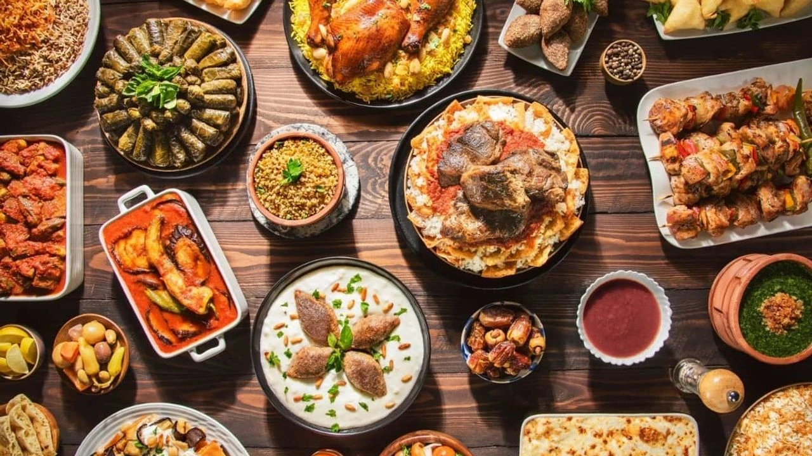

Flavors of Turkish Cuisine
Welcome to the Flavors of Turkish Cuisine
Turkish cuisine is a vibrant tapestry of centuries-old traditions and diverse cultural influences, offering a feast for the senses. Known for its rich flavors, aromatic spices, and a wide variety of dishes, it reflects Türkiye's unique history and geography. From the hearty stews and fragrant rice pilafs of the Anatolian heartland to the light and refreshing olive oil dishes of the Aegean coast, Turkish cuisine has something to delight every palate
Our dishes are crafted with the finest ingredients and cooking techniques, celebrating the essence of freshness and balance. Whether it’s the warm comfort of a traditional soup, the irresistible aroma of a sizzling kebab, or the delicate sweetness of desserts like baklava, each bite takes you on a journey through Türkiye's culinary heritage.
Whether you're a food enthusiast or simply curious about Turkish flavors, we invite you to explore the magic of this extraordinary cuisine. Join us as we uncover some of the most beloved and iconic dishes of Türkiye, each with its own unique story and taste.
